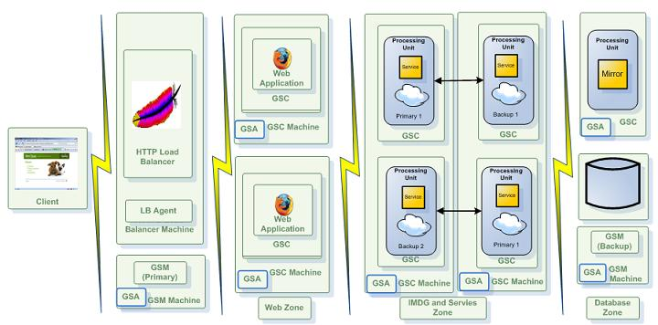

Section Summary: The GigaSpaces runtime environment, aka Service Grid, provides SLA-driven capabilities when deploying and running processing units by using the available GSCs as a dynamic pool of processes which can host the processing unit
Overview
The GigaSpaces runtime environment (A.K.A the Service Grid) provides SLA-driven capabilities via the GSM and the GSC runtime components. The GSC is responsible for running one or more Processing Units; while the GSM is responsible for analyzing the deployment and provisioning the processing unit instances to the available GSCs.
| Enforcing SLA definitions The SLA definition are only enforced when deploying the processing unit on to the GigaSpaces service grid, since this environment actively manages and controls the deployment using the GSM(s). When running within your IDE or in standalone mode these definitions are ignored. |
The SLA definitions can be provided as part of the processing unit package or during the processing unit's deployment process. They define the number of processing unit instances that should be running and deploy-time requirements such as the amount of free memory or CPU or the clustering topology for processing units which contain a space. The GSM reads the SLA definition, and deploys the processing unit onto the available GSCs according to it.
Defining Your Processing Unit's SLA
The SLA contains the deployment criteria in terms of clustering topology (if it contains a space) and deployment-time requirements.
It can be defined in multiple ways:
- Include an sla.xml file which contains the definitions within the processing unit's jar file. This file can be located at the root of the processing unit jar or under the META-INF/spring directory, alongside the processing unit's XML file. This is the most recommended way to follow.
- Embed the SLA definitions within the processing unit's pu.xml file.
- Provide a separate XML files with the SLA definitions to the GSM at deployment via one of the deployment tools.
- Use the deployment tools themselves to provide/override the processing unit's SLA (see below). For example, the GUI deployment dialogue enables you to type in various SLA definitions, such as the number of instances, number of backups and space topology.
The SLA definition, whether it comes in a separate file or embedded inside the pu.xml file, is composed of a single <os-sla:sla> XML element. A sample SLA definition is shown below (note that you can use plain Spring definitions or GigaSpaces specific namespace bindings):
Namespace
<beans xmlns="http://www.springframework.org/schema/beans" xmlns:xsi="http://www.w3.org/2001/XMLSchema-instance" xmlns:os-sla="http://www.openspaces.org/schema/sla" xsi:schemaLocation="http://www.springframework.org/schema/beans http://www.springframework.org/schema/beans/spring-beans.xsd http://www.openspaces.org/schema/sla http://www.openspaces.org/schema/sla/openspaces-sla.xsd"> <os-sla:sla cluster-schema="partitioned-sync2backup" number-of-instances="2" number-of-backups="1" max-instances-per-vm="1"> ... </os-sla:sla> </beans>
Plain
<beans xmlns="http://www.springframework.org/schema/beans" xmlns:xsi="http://www.w3.org/2001/XMLSchema-instance" xsi:schemaLocation="http://www.springframework.org/schema/beans http://www.springframework.org/schema/beans/spring-beans.xsd"> <bean id="SLA" class="org.openspaces.pu.sla.SLA"> <property name="clusterSchema" value="partitioned-sync2backup" /> <property name="numberOfInstances" value="2" /> <property name="numberOfBackups" value="1" /> <property name="maxInstancesPerVM" value="1" /> </bean> ... </beans>
The SLA definition above creates 4 instances of a Processing Unit using the partitioned-sync2backup space topology. It defines 2 partitions (number-of-instances="2"), each with one backup (number-of-backups="1"). In addition, it requires that a primary and a backup instance of the same partition will not be provisioned to the same GSC (max-instances-per-vm="1").
 It is up to the deployer to configure the SLA correctly. Trying to deploy a Processing Unit with a cluster schema that requires backups without specifying numberOfBackups causes the deployment to fail.
It is up to the deployer to configure the SLA correctly. Trying to deploy a Processing Unit with a cluster schema that requires backups without specifying numberOfBackups causes the deployment to fail.
| In previous releases, the SLA definition also included dynamic runtime policies, e.g. creating additional processing unit instances based on CPU load, relocating a certain instance when the memory becomes saturated, etc. These capabilities are still supported, but are considered deprecated. Version 7.0 introduces the Administration and Monitoring API which supports the above and and much more. |
Defining the Space Cluster Topology
When a processing unit contains a space, the SLA specifies the clustering topology for that space. The XML element that defines this is the cluster-schema, and is an attribute of the os-sla:sla XML element, as shown above.
The reason for defining the space's clustering topology within the SLA definition rather than the space definition with the pu.xml file is twofold:
- The clustering topology directly affects the number of instances of the processing unit, and is therefore considered part of its SLA. For example, a partitioned space can have 2 primaries and 2 backups, and a replicated space can have 5 instances. This means that the containing processing unit will have the same number of instances.
- More importantly, separating the clustering topology from the actual space definition enables to truly implement the "write once, scale anywhere" principal. It means you can run the same processing unit within your IDE for unit tests using the default, single space instance clustering topology, and then deploy it to the runtime environment and run the same processing unit with the real clustering topology (e.g. partitioned with 4 partitions).
There are numerous clustering topologies you can choose from:
- default: Single space instance, no replication or partitioning
- sync-replicated: Multiple space instances. When written to one of the space instances, objects are synchronously replicated to all space instances. The maximum capacity of this topology is the one of the smallest JVM in the cluster.
- async-replicated Multiple space instances. When written to one of the space instances, objects are asynchronously replicated to all space instances. The maximum capacity of this topology is the one of the smallest JVM in the cluster.
- partitioned-sync2backup Multiple space instances. Objects are distributed across all of the space instances, such that each instance contains a separate subset of the data and forms a separate partition. The partitioning (distribution) of objects is based on their routing property. Optionally, when using this topology, you can designate one or more backup instances to each of the partitions, such that when an object is written to a certain partition, it is synchronously replicated to the backup copy(ies) of that partition. The maximum capacity of this topology is the overall capacity of all of the JVMs in the cluster, divided by the number of backups+1.
From the client application's perspective (the one that connects to the space from another process), the clustering topology is transparent in most cases.
| Please refer to this page for more details about space clustering topologies and guidelines regarding when to use each of the topologies. |
SLA Based Distribution and Provisioning
When deployed to the service grid, the processing unit instances are distributed based on the SLA definitions. These definitions form a set of constraints and requirements that should be met when a processing unit instance is provisioned on to a specific container (GSC). The SLA definitions considered during the initial deployment, relocation, and re-provisioning of an instance after failure.
Default SLA Definitions
If no SLA definition is provided either within the Processing Unit XML configuration or during deploy time, a default SLA is used. The following is the default SLA definition:
Max Instances per VM/Machine
The SLA definition allows you to define the maximum number of instances for a certain processing unit, either per JVM (GSC) or physical machine (regardless of the number of JVMs/GSCs that are running on it).
The max-instances parameter has different semantics when applied to processing units that contain a space with primary-backup semantics (i.e. that uses the partitioned-sync2backup cluster schema and defines at least one backup) and when applied to a processing unit which contains no embedded space, or which contains a space with no primary-backup semantics.
 When applied to a processing unit which contains no embedded space, or which contains a space with no primary-backup semantics, the max-instances parameter defines the total number of instances that can be deployed on a single JVM or on a single machine.
When applied to a processing unit which contains no embedded space, or which contains a space with no primary-backup semantics, the max-instances parameter defines the total number of instances that can be deployed on a single JVM or on a single machine.
When applied to a processing unit which contains a space with primary-backup semantics, the max-instances parameter defines the total number of instances which belong to the same primary-backup group (or partition) that can be provisioned to a single JVM or a single machine.
The most common usage of the max-instances feature is when using a processing unit which contains a space with primary-backup semantics. By setting its value to 1, you ensure that a primary and its backup(s) cannot be provisioned to the same JVM (GSC) / physical machine.
| The max-instances-per-vm means for a PU with an embedded space the max amount of instances per partition. A partition may have primary or backup instance. The max-instances-per-vm=1 means you won't have primary and a backup of the same partition provisioned into the same GSC. You may have multiple partitions with primary or backup instances provisioned into the same GSC. You can't limit the amount of instances from different partitions a GSC may host. If you have enough GSCs (as the amount of partitions X 2) you will end up having a single instance per GSC.
If you won't have enough GSCs we will distribute the primary or backup instances of the different partitions across all the existing GSCs, and will do our best to distribute primary instances in even manner across all the GSCs on all the machines. If you will increase the amount of GSCs after the initial deploy you will have to "re-balance" the system - meaning; distribute all the primaries across all the GSCs. You may perform this activity via API or automaticaly by using the ESM. Rebalancing the instances will increase the capacity of the data-grid (more GSCs hosting the data-grid). The rebalance concept is based on the assumption that you had initially more partitions that GSCs. We call the ratio between partitions to GSCs the scaling factor; meaning how much your data-grid can expand itself without any shutdown and without increasing the amount of partitions. Example: you start with 4 GSCs and 20 partitions with backups (40 instances) which means each GSC will host initially 10 instances and may end up with 40 GSCs (after one or more re-balance operations) where each will host a single instance. With this example we have increased the capacity of the data grid to be 10 times larger without downtime while the amount of partitions remain the same. See the capacity planning for more details. |
Here is an example of setting the max-instances-per-vm parameter:
Here is an example of setting the max instances per machine parameter:
Max Instances per Zone
The SLA definition allows to define maximum instances of a processing unit per zone. The semantics of the setting is different when using a processing unit that has an embedded space with primary / backup, and all other cases (non backup processing unit with embedded space, and plain processing units).
When there are no backups, the setting basically controls the maximum instances per zone out of all the processing unit instances. The setting is usually used with the zone requirement setting to constrain where the processing unit instances will be created. Here is an example of a deployment where only 4 instances are allowed in zone1, and 3 instances are allowed in zone2, and the processing unit should only be instantiated on these two zones:
<os-sla:sla max-instances-per-zone="zone1/4,zone2/3"> <os-sla:requirements> <os-sla:zone name="zone1" /> <os-sla:zone name="zone2" /> </os-sla:requirements> </os-sla:sla>
If, for example, we want to only have 4 instances running on zone1, 3 instances running on zone2, and the rest on zone3, then we can simply allow processing units to be created on zone3 as well in the requirements:
<os-sla:sla max-instances-per-zone="zone1/4,zone2/3"> <os-sla:requirements> <os-sla:zone name="zone1" /> <os-sla:zone name="zone2" /> <os-sla:zone name="zone3" /> </os-sla:requirements> </os-sla:sla>
When a processing unit does start an embedded space with a backup topology, the semantics of the SLA applies on a per partition level. This means that the setting allows to control if the primary and backup will run on the same zone or not. For example, if we want to deploy a primary with backup topology with 10 partitions each with one backup, and have the primary and backup not run on the same zone we can do the following:
<os-sla:sla number-of-instances="10" number-of=backups="1" max-instances-per-zone="zone1/1,zone2/1"> <os-sla:requirements> <os-sla:zone name="zone1" /> <os-sla:zone name="zone2" /> </os-sla:requirements> </os-sla:sla>
In the above case, the primary and the backup will not run on the same zone. If the primary of partition 1 was started on zone1, then the backup of partition 1 will be started on zone2. This comes very handy when defining rack aware deployments.
Total Max Instances Per VM
This parameter controls the total amount of PU instances that can be instantiated within a GSC. This is very different than the max-instances-per-vm that controls how many instances a partition may have within a GSC. It does not control the total amount of instances from different PUs or other partitions that can be provisioned into a GSC. To control the Total Max Instances Per VM you should use the system property com.gigaspaces.grid.gsc.serviceLimit and set its value before running the GSC:
set GSC_JAVA_OPTIONS=-Dcom.gigaspaces.grid.gsc.serviceLimit=2
The default value of the com.gigaspaces.grid.gsc.serviceLimit is 500.
Even Distribution of Primaries
When the GSM provisions the processing unit instances to the running GSCs at deployment time, its provisioning mechanism uses a weight based algorithm to determine the most adequate GSC on which to provision each of the instances.
The goal of algorithm is to make sure that the deployment is evenly balanced across the running GSC, in terms of the number of services provisioned to each GSC and how primary processing unit instances are spread across the cluster.
This algorithm is based on a best effort approach and will ensure even distribution in most cases. Unlike previous releases, it has a negligible effect on the deployment time.
Deployment Requirements - Hosts, Zones and Machine Utilization
The SLA enables you to define requirements which control the provisioning process of processing unit instances the the available GSCs. The requirements are based on machine level statistics and grouping of the GSC processes to zones (see below).
The following example shows the variety of supported requirements:
Namespace
<os-sla:sla> <os-sla:requirements> <os-sla:host ip="192.168.0.1" /> <os-sla:host ip="192.168.0.2" /> <os-sla:zone name="zone1" /> <os-sla:zone name="zone2" /> <os-sla:cpu high=".9" /> <os-sla:memory high=".8" /> </os-sla:requirements> </os-sla:sla>
Plain
<bean id="SLA" class="org.openspaces.pu.sla.SLA"> <property name="requirements"> <list> <bean class="org.openspaces.pu.sla.requirement.HostRequirement"> <property name="id" value="192.168.0.1" /> <bean class="org.openspaces.pu.sla.requirement.HostRequirement"> <property name="id" value="192.168.0.2" /> </bean> <bean class="org.openspaces.pu.sla.requirement.ZoneRequirement"> <property name="zone" value="zone1" /> </bean> <bean class="org.openspaces.pu.sla.requirement.ZoneRequirement"> <property name="zone" value="zone2" /> </bean> <bean class="org.openspaces.pu.sla.requirement.CpuRequirement"> <property name="high" value=".9" /> </bean> <bean class="org.openspaces.pu.sla.requirement.MemoryRequirement"> <property name="high" value=".8" /> </bean> </list> </property> </bean>
The above requirements contain the following provisioning constraints which are enforced by the GSM:
- Only provision the processing unit instances to hosts 192.168.0.1 and 192.168.0.2
- Only provision the processing unit instances to GSCs which belong to zone "zone1" or zone "zone2"
- Do not provision processing unit instances to GSCs whose hosting machine utilizes more than 90% of its CPU
- Do not provision processing unit instances to GSCs whose hosting JVM process utilizes more than 80% of its RAM
When using the host or zone requirements, note that more than one requirement can be defined (for example, to define a set of machines this Processing Unit can be deployed to; define the machine's CPU utilization limit; and define the GSC's memory usage limit ).

Defining zones allows you to configure logical tags for each GSC, according to which the processing unit instances will be provisioned to. You can use any alphanumeric combination for a zone name. The GSC can be started with a set of zones that are tagged to it, which match (or not) a given zone requirement in the processing unit's SLA (the zone name matching is case sensitive). The zones of a GSC are specified via the com.gs.zones system property. Typically this will be done by setting the GSC_JAVA_OPTIONS environment variable before running the GSC, as shown below (note that you can also edit the setenv.sh/bat script manually, but it is less recommended since it touches a core system script):
The above defines zones "zone1" and "zone3" to be tagged to the GSC which will be started. Note that multiple can be specified using a comma separated list.
Instance Level Requirements
You can also define SLA deployment requirements on per processing unit instance basis. Here is an example:
Namespace
<os-sla:sla> <os-sla:requirements> <os-sla:cpu high=".9" /> <os-sla:memory high=".8" /> </os-sla:requirements> <os-sla:instance-SLAs> <os-sla:instance-SLA instance-id="1"> <os-sla:requirements> <os-sla:host ip="100.0.0.1" /> </os-sla:requirements> </os-sla:instance-SLA> <os-sla:instance-SLA instance-id="1" backup-id="1"> <os-sla:requirements> <os-sla:host ip="100.0.0.2" /> </os-sla:requirements> </os-sla:instance-SLA> </os-sla:instance-SLAs> </os-sla:sla>
Plain
<bean id="SLA" class="org.openspaces.pu.sla.SLA"> <property name="requirements"> <list> <bean class="org.openspaces.pu.sla.requirement.CpuRequirement"> <property name="high" value=".9" /> </bean> <bean class="org.openspaces.pu.sla.requirement.MemoryRequirement"> <property name="high" value=".8" /> </bean> </list> </property> <property name="instanceSLAs"> <list> <bean class="org.openspaces.pu.sla.InstanceSLA"> <property name="instanceId" value="1" /> <property name="requirements"> <list> <bean class="org.openspaces.pu.sla.requirement.HostRequirement"> <property name="id" value="100.0.0.1" /> </bean> </list> </property> </bean> <bean class="org.openspaces.pu.sla.InstanceSLA"> <property name="instanceId" value="1" /> <property name="backupId" value="1" /> <property name="requirements"> <list> <bean class="org.openspaces.pu.sla.requirement.HostRequirement"> <property name="id" value="100.0.0.2" /> </bean> </list> </property> </bean> </list> </property> </bean>
The above example verifies that the first instance is deployed to a specific machine (specified by its IP address), and its backup is deployed to a different machine. All instances share the "general" requirements of CPU and memory.
| When using instance level SLA, max-instances settings do not apply (or any cluster level setting). |
Monitoring the Liveness of Processing Unit Instances
The GSM monitors the liveness of all the processing unit instances it provisioned to the GSCs. The GSM pings each instance in the cluster to see whether it's available.
You can also control how often a processing unit instance will be monitored by the GSM, and in case of failure, how many times the GSM will retry to ping the instance and for how long it will wait between retry attempts.
This is done using the <os-sla:member-alive-indicator> element. It contains the following attributes:
| Attribute | Description | Default |
|---|---|---|
| invocation-delay | How often (in milliseconds) an instance will be monitored and verified to be alive by the GSM | 5000 (5 seconds) |
| retry-count | Once an instance has been determined to not be alive, how many times to check it before giving up on it | 3 |
| retry-timeout | Once an instance has been determined to not be alive, what is the timeout interval between retries (in milliseconds) | 500 (0.5 seconds) |
When a processing unit instance is determined as unavailable, the GSM which manages its deployment tries to re-provision the instance on another GSC (according to the SLA definitions)
NameSpace
<os-sla:sla> <os-sla:member-alive-indicator invocation-delay="5000" retry-count="3" retry-timeout="500" /> </os-sla:sla>
Plain
<bean id="SLA" class="org.openspaces.pu.sla.SLA"> <property name="member-alive-indicator"> <bean class="org.openspaces.pu.sla.MemberAliveIndicator"> <property name="invocationDelay" value="5000" /> <property name="retryCount" value="3" /> <property name="retryTimeout" value="500" /> </bean> </property> </bean>
Troubleshooting the Liveness Detection Mechanism
For troubleshooting purposes, you can lower the logging threshold of the relevant log category by modifying the log configuration file located under <GigaSpaces root>/config/gs_logging.properties on the GSM. The default definition is as follows:
org.openspaces.pu.container.servicegrid.PUFaultDetectionHandler.level = INFO
You can change it to one of the below thresholds for more information:
| Level | Description |
|---|---|
| CONFIG | Logs the configurations applied |
| FINE | Logs once a member is determined as not alive |
| FINER | Logs once a member is indicated as not alive (on each retry) |
| FINEST | every fault detection attempt |
 For service-failure troubleshooting, Level.FINE should suffice.
For service-failure troubleshooting, Level.FINE should suffice.
Schema
The SLA schema and complete configuration options are described below:
{kind=link}